Three notes on the chosen symbol and wordmark, answered below. The final redraw will carry all three: clean arcs, equal ring and tear widths, the tear on the golden section, and the chosen wordmark.
Round 4 and earlier are unchanged.
1. ‘ai’ after the wordmark“can we see what it looks like with ai following it?”
2. Equal lines“the tear and outline should be the same size.”
3. A principled tear“the tear location should follow logo design principles so it looks placed correctly.”
3Where the tear goes
All three use the new equal lines (ring 12, tear 12) and the same coral sun (radius 56), so only the tear moves. Sky and stub are measured as the visible areas either side of the cut.
56%
Current, placed by eye
Tear centre
56.0% down
Sky : stub
1.29 : 1
Empty sky above the ring
20% of the height
Ring and tear
12 and 12 units
Round 4's position. Sky and stub are close to even (1.29 : 1), so the dark stub, the heaviest part, takes almost half the mark.
16 px check
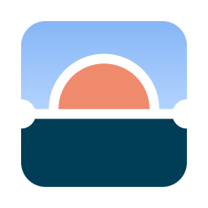
colourone colour
reversed
One colour and reversed, 64 and 32 px
Dark mode
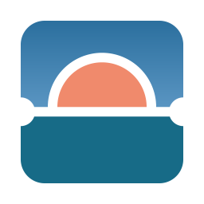
61.1%
Golden section
Recommended
Tear centre
61.1% down
Sky : stub
1.62 : 1
Empty sky above the ring
25% of the height
Ring and tear
12 and 12 units
The cut divides the ticket so sky : stub = 1.618 : 1, measured on the visible areas either side of the cut. The dark stub looks heavier per unit of area than the light sky, so it should be the smaller part. The golden section is the classic unequal split that still feels balanced. Cross-check: putting the sun's visual centre on the optical centre (5% above the middle) lands the tear at 59.6%, within 3 units of this line.
16 px check
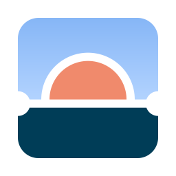
colourone colour
reversed
One colour and reversed, 64 and 32 px
Dark mode
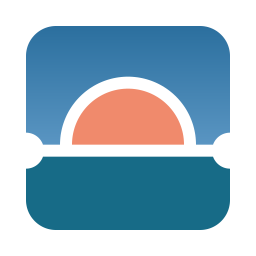
65.7%
Rule of thirds
Tear centre
65.7% down
Sky : stub
2.00 : 1
Empty sky above the ring
29% of the height
Ring and tear
12 and 12 units
The horizon-on-the-third rule from landscape composition (sky : stub = 2 : 1). Also principled, but it brings back the empty sky above the sun (29% of the height) that the first note on B1 was about.
16 px check
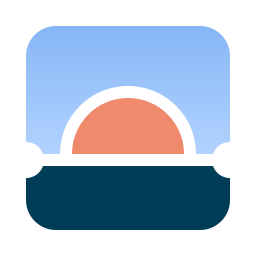
colourone colour
reversed
One colour and reversed, 64 and 32 px
Dark mode
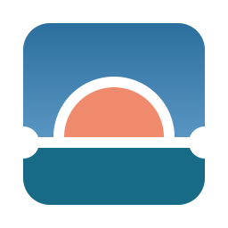
2Ring and tear, the same width
The ring around the sun comes up from 10 to 12 units to match the tear, so both are 12 units: 5.9% of the ticket's width. Close up they meet as one light line. At 64 and 32 px they stay the same weight, so no optical correction was needed.
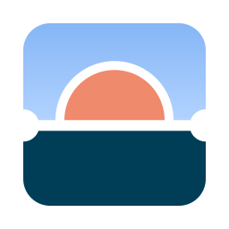
Round 4: ring 10, tear 12. The ring reads thinner.
Now: ring 12, tear 12, one continuous line.
64 px32 px
Small sizes, real pixels, enlarged: the ring and the tear render at the same weight.
1‘altaria ai’
Each lockup uses the golden-section symbol. The ‘i’ in ‘ai’ keeps its own dot in its own colour, so the coral sun stays unique to ‘altaria’: one sun per logo.
The word space is Commissioner's own, and both words sit on one baseline.
Ref
‘altaria’ alone
as chosen
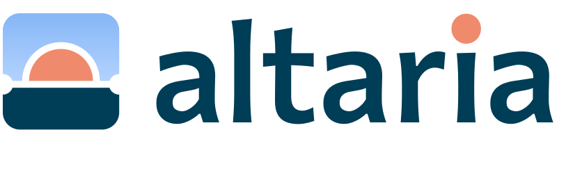
The wordmark you picked, for reference.
A
Teal ‘ai’
The direct answer: ‘altaria ai’ with ‘ai’ in the teal accent (#176B87, lifted to #64C3E2 on dark), like round 1's ‘Altaria AI’. ‘ai’ reads as part of the name.
B
Teal ‘ai’, light
Recommended
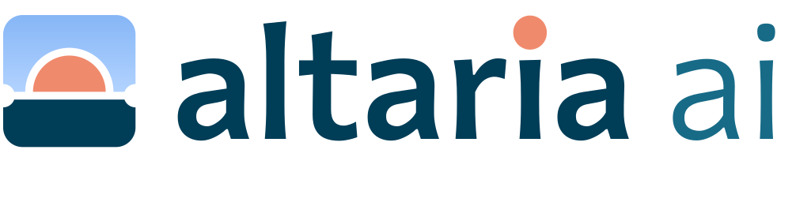
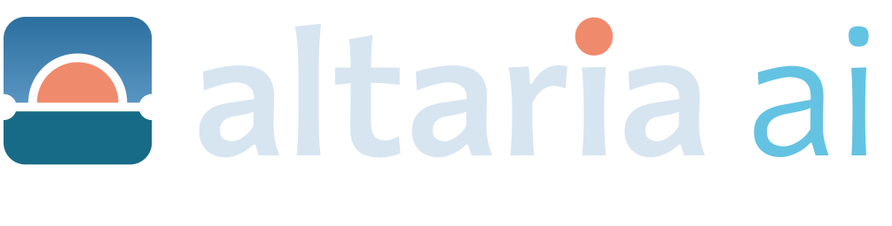
The same teal at a lighter weight (340 against 540). ‘altaria’ stays the name, ‘ai’ becomes a quiet descriptor, and it doesn't compete with the coral sun.
C
Light ‘ai’, no colour
Weight alone carries the difference, so it also works in one colour. It's how B would print in one colour or be engraved; A, in one colour, would lose the difference.
Recommended
Tear on the golden section (61.1% down, sky : stub = 1.618 : 1), with the ring and tear both 12 units. For the wordmark, B: ‘altaria ai’ with ‘ai’ in teal at a light weight. C is its one-colour form.
Why the golden section
The dark stub carries the most visual weight, so it should be the smaller part. φ is the classic unequal split that still reads as balanced. An independent check, the sun's visual centre on the optical centre, lands within 3 units, and thirds would bring the empty sky back.
Into the final kit
After approval, the symbol is rebuilt with true arcs (these previews use sampled curves) at these exact proportions. The kit then adds the lockups, favicon, app icons, one-colour versions and a usage guide in brand/final/.